Recorders | Shehia |
|---|---|
Saumu Mzume Juma | Kiuyu |
Rehema Jabu Khamis | Kiuyu |
Yussuf Rashid Umoja | kiuyu |
Hamad Nassor Hamad | Shumba |
Maida Mwadini Juma | Shumba |
Salima Hamad Kombo | Shumba |
Mgeni Hamad Salim | Tumbe |
Salma Rashid Salum | Tumbe |
Akram Hamad Jabu | Tumbe |
FISH RECORDER TRAINING (TUMBE, SHUMBA & KIUYU) - WCS BAF)
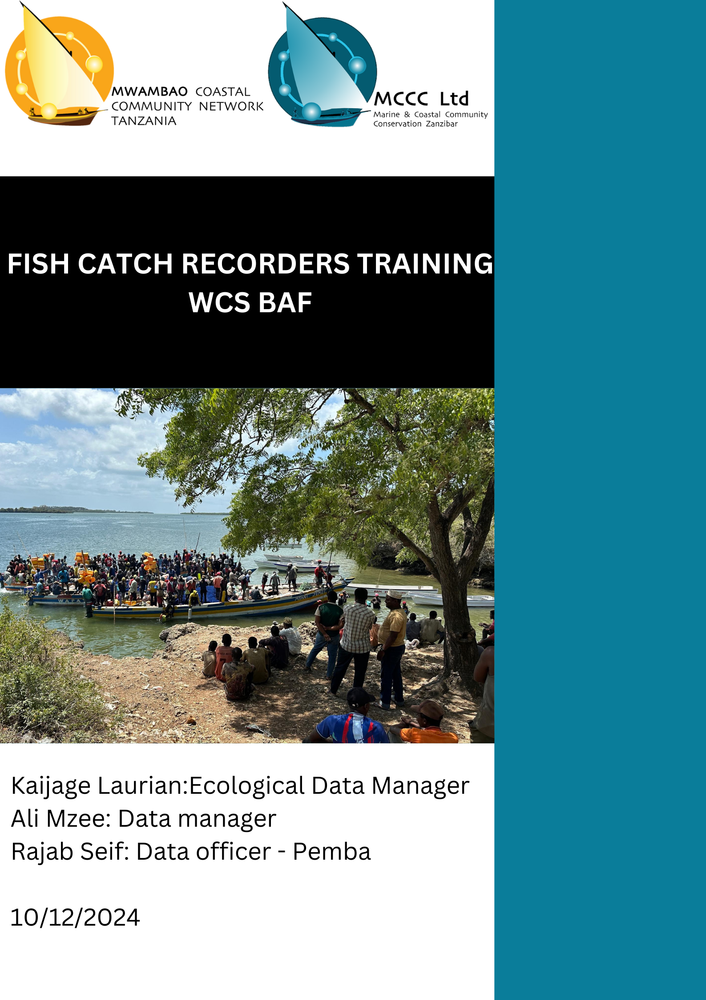
1 EXECUTIVE SUMMARY
The Fish Catch Recorder Training was a key component of Activity 1.1.1: Collection of catch data at selected landing sites, contributing to the project’s ecological baseline indicator under Outcome 1: Improved resources, instruments, and capacities for MPA management and sustainable use.
The training was conducted in two phases. Phase 1, held from 14-16 September, emphasized the importance of fish catch data, class-based practical sessions, data collection protocols, and field training on data collection. Phase 2, conducted on 14-15 November, focused on advanced topics such as using phones for data collection, correcting errors, fish photography, and species identification.
Out of ten villages under the project’s coverage, three villages—Tumbe, Kiuyu, and Shumba—were selected for the training as they featured landing sites primarily dealing with reef species. During the preliminary interviews involving seven participants per village, three data collectors were selected from each village.
The training was successful, with fish catch data collected for October and November already logged into Survey 123. However, the process faced minor challenges, including delays in acquiring the required equipment for the training.
2 INTRODUCTION
The Blue Action Fund (BAF), subgranted to WCS, aims to improve resources, instruments, and capacities for Marine Protected Area (MPA) management and sustainable use. Among its key activities is the collection of fish catch data at selected landing sites, which will serve as an indicator for ecological baselines. These baselines will guide the sustainable use of marine resources—including reefs, seagrass, mangroves, and associated reef species—enabling informed management planning to ensure their long-term sustainability.
To achieve this, local communities were trained in data collection protocols for reef fishes, which will empower the Shehia Fisher Committees (SFC) to develop data-driven management plans and projections. The project covers 10 villages on Pemba Island in Micheweni District:Wingwi Mapofu, Mjini Wingwi, Micheweni Majenzi, Shumba Mjini, Maziwa Ng’ombe, Kiuyu Mbuyuni, Sizini, Tumbe Mashariki, Tumbe Magharibi and Msuka Kinowe
Among these villages, Shumba Mjini, Tumbe, and Kiuyu Mbuyuni were selected for recruitment, training, and implementation of the activity due to their accessible landing sites for reef fisheries. These villages—located near the Pemba Channel Conservation Area (PECCA)—currently lack Community Management Groups (CMG). The landing sites selected were; Shumba Mjini: Kwa Mjawiri, Tumbe: Bobweni, Kiuyu Mbuyuni: Ulingoni
According to the 2022 Zanzibar Fisheries Report, Micheweni District contributes up to 10% of Zanzibar’s total fish landings, with 38% of the catch comprising reef fish. Notably, Shumba and Tumbe were listed as major landing sites in the Pemba region. Recognizing the importance of this area, collecting fish catch data is critical for supporting data-driven fisheries management decisions.
The training was conducted in two phases:
Phase 1 (14–16 September): Focused on training participants in the importance of fish catch data, data collection protocols, and practical field data collection. Phase 2 (14–15 November): Emphasized advanced skills such as error correction, using phones for data collection, fish photography, and species identification.
2.1 Objective
- Train catch recorders
- Obtain locally important fish names and pictures
3 METHODOLOGY
3.1 Initial Data Collection and Ground Truthing
Before the training began, initial data was collected to identify potential landing sites in each village. This preliminary step was crucial to ensure that the selected sites were representative of the broader fishing activities within each community. Ground truthing followed this data collection to confirm the suitability of the landing sites for regular monitoring and data collection.
3.2 Selection of village recorders candidates
Prior to the training sessions, information was conveyed to the SFC regarding the upcoming activity and the criteria for selecting village recorders. The communication detailed the need for proficient individuals capable of reading and writing, with a preference for those with secondary school education. This ensured that the selected recorders would be capable of accurately collecting and recording fisheries data.
Each SFC was responsible for shortlisting seven candidates from their respective communities. These candidates were then invited to participate in an interview session. The purpose of the interviews was to assess the candidates’ suitability for the role and to select the final village recorders. To note that two neighboring villages were grouped in one-three days training.
The selection process was as follows:
For communities with one active landing site, three village recorders were selected from the shortlisted candidates.
3.3 Selection of eligible village recorders via interview
Following the selection process, a one-day interview session was conducted for the selected village recorders. This session was designed to assess their suitability for the role and to provide an initial orientation to the project’s objectives and requirements. The interviews also served as an opportunity to address any concerns or questions the recorders had about their responsibilities.
The interview sessions were divided into two phases:
First Round - Oral Interview: This round focused on assessing the candidates’ interpersonal relations. Observations were made on how individuals answered the questions and the level of confidence and Knowledge . Good social and communication skills were considered crucial for the role, which involves regular interaction with fishers and buyers. Questions asked were such as:
- Name, age and level of education?
- What is your current occupation?
- What do you know about marine conservation?
- what do you understand by the term statistics ?
- Can you name ten fish species?
- Name this species? (Figure 1)?
- Do you own or can you use a smart phone?
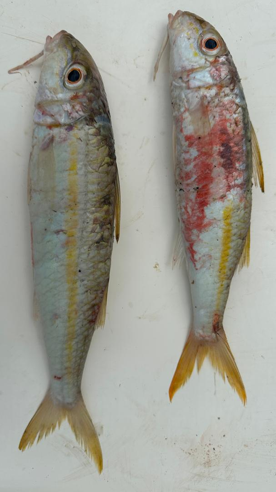
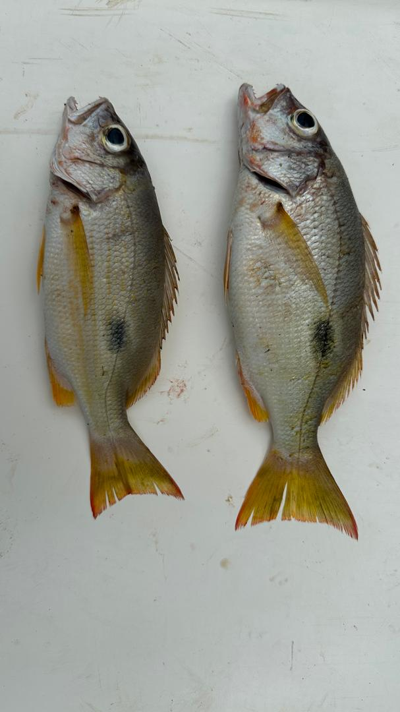
Second Phase - Written Interview:In this phase, candidates were given a 15-minute written interview to assess their reading, writing, and mathematical knowledge (Figure 2). This helped in evaluating their proficiency in the essential skills required for accurate data recording and reporting.
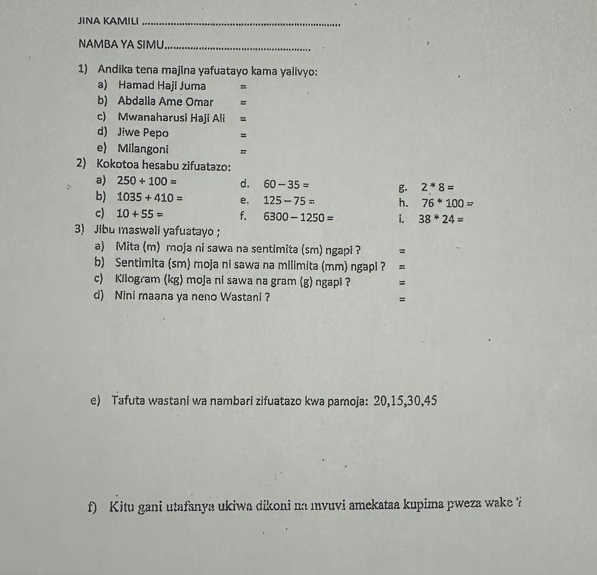
Comparison of Answers: Comparisons were made of all applicants’ written and verbal answers, as well as their group interactions. These factors were all considered before making the final hiring decisions
3.4 Training Program
3.5 Phase one
The main training program spanned three days and was structured to cover both theoretical and practical aspects of fisheries data collection.
3.5.1 Day 1: Introduction and Theory
Fish Species Identification: Participants agreed on the local names of reef fish species to ensure consistency in data recording.In this we used CORDIO’s fish ID along with the WIO fish ID books to identify and list local names of locally important reef fishes. Importance of Fisheries Data: Discussions was to highlight the significance of fisheries data for effective management and conservation efforts. Data Accuracy and Ethics: Emphasis was to be placed on the importance of accurate data collection and maintaining ethical standards during the process.
3.5.2 Day 2: Equipment Use and Data Recording
Recording Equipment: Participants were trained in the use of various recording equipment (Figure 3), including scales and rulers. Data Recording Procedures: Detailed instructions were provided on how to accurately record data at the landing sites.
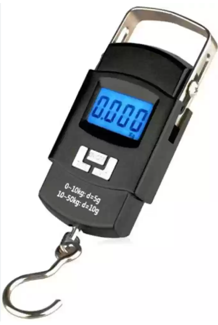
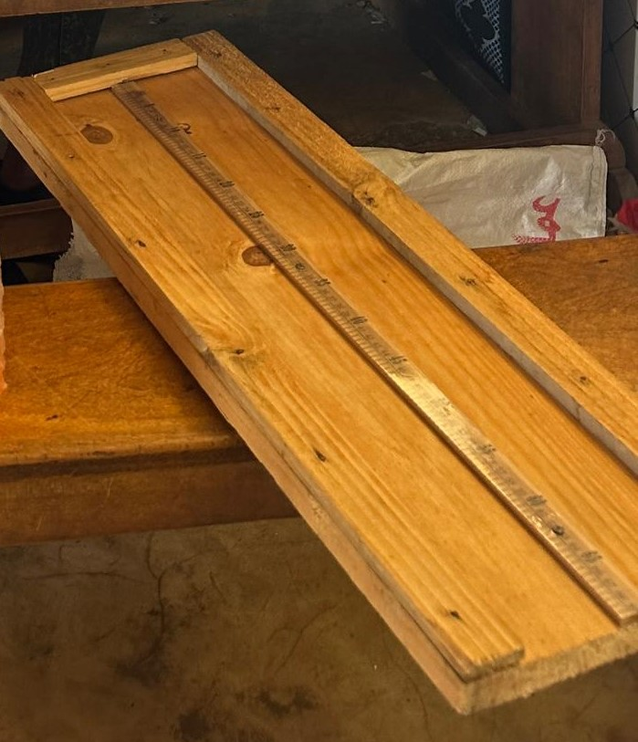
3.5.3 Day 3: Field Session
Practical Application: The training concluded with a field session where participants practiced their data collection skills at selected landing sites. This hands-on experience was vital in reinforcing the theoretical knowledge gained during the previous days.
3.6 Phase two
3.6.1 Day 1: Fish Identification and Validation
The first day of training was dedicated to fish identification at the family level. Participants were introduced to the concept of grouping fish species into their respective families, enabling more accurate data logging. This session provided a foundational understanding of how fish families are classified, ensuring that recorders could differentiate between species correctly during data collection.
In addition to the classification training, a fish name validation exercise was conducted. Participants worked collaboratively to confirm and standardize local fish names, aligning them with scientific nomenclature where applicable. This step was crucial for creating a Fish Identification Guide, which will serve as a community resource for identifying fish species more accurately and consistently across different landing sites.
Furthermore, the phones to be used for data collection were distributed to the participants. Instructions on phone maintenance and care were also provided.
3.6.2 Day 2: Survey123 Training and Troubleshooting
The second day focused on equipping participants with the skills to use the Survey123 application for data collection. The session began with step-by-step guidance on how to download and install the application. Participants were then trained on how to log into Survey123, set up their accounts, and familiarize themselves with the interface.
The training emphasized the type of data to be collected and how it should be accurately entered into the app. Practical demonstrations were conducted to illustrate the process of logging data, with examples drawn from real scenarios to ensure clarity.
A key part of the day was a discussion on Survey123 troubleshooting, where participants were taught how to address common issues that may arise during data collection.
Finally, participants were instructed on how to update the Survey123 forms whenever changes are made to the data collection protocols or structure. This session ensured that data recorders could adapt to future updates without requiring additional hands-on support.
4 RESULTS
4.1 Landing sites
In total, 3 landing sites were identified from the preliminary scoping data collected from the SFC. These landing site include Kwa mjawiri In Shumba Mjini, Bobweni in Tumbe and Ulingoni in Kiuyu Mbuyuni.
The selection criteria for these landing sites were based on their activity levels, ensuring that the most active fish landing sites in each village were included
4.2 Data recorders selected
After conducting oral and written interviews, the results were tallied. The best three candidates from villages with a single landing site. In general 9 recorders were selected (Table 1).
4.3 Training
4.3.1 Phase one
During the first day of training, over three hundred names of fish species, along with their Swahili names, were collected (Figure 4). Most species had unique Swahili names, but some species shared names. For example, most parrotfishes are commonly referred to as “Pono” with no name distinction between them. In other rare cases, fish from different families were given names of a different family due to similar body morphology. This if for example in the case of the swahili name “Tasi” which is commonly used to refer to Rabbitfishes has been intercheangably used for some species of unicornfishes such as Naso vlamingii.
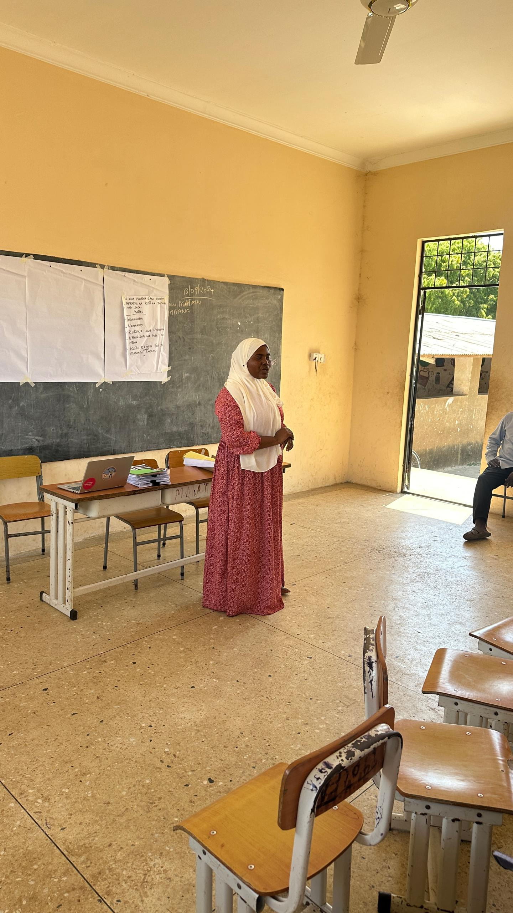
The second day saw a lot of interaction from participants as they sought to gain a thorough understanding of the data collection process. Emphasis was placed on the separation of species and measuring the individual length-weight relationship of each species. Special attention was given to accurate data recording and the implications of inaccurate data, highlighting that these data would be used by the SFC to guide adaptive management measures for their marine resources. To provide practical examples, sample specimens were brought to the class, allowing participants to engage in hands-on learning of the entire process(Figure 5)

On the third day, the team of recorders convened at a selected active landing site. Prior information had been relayed to the fishermen to facilitate their collaboration. The timing was coordinated to coincide with the fishermen’s return, ensuring active participation. Each recorder took turns performing various aspects of the recording process, including writing and measuring, to ensure the entire team was well-rounded and proficient in all tasks (Figure 6).

In Kiuyu, the distance between the village and the landing site posed a significant challenge for the data recorders. The landing site is located far from the residential area, making it difficult for the recorders to consistently travel to the site for data collection. The recorders requested support in the form of bicycles or transport money to facilitate their movement during the data collection period.
In Shumba, most of the catch comprises tuna and tuna-like species, which fall outside the primary objective of the project that focuses on reef fisheries. However, the Shehia does have a small number of vessels that land reef fish. The training and data collection efforts in Shumba will be concentrated on these vessels to ensure alignment with the project’s objectives.
4.3.2 Phase two
On day one Participants were taught to identify fish at the family level by observing key distinguishing features. This session was highly interactive, with participants describing fish characteristics in Kiswahili, which enhanced their ability to connect local knowledge with scientific concepts (Figure 7).

For instance, one group identified “Kundaji” (goatfishes) as having barbels, forked tails, and other unique traits. However, a misconception arose when a participant claimed that barbels were only found on males. This was clarified by the facilitator. Another misconception was that siganids (“Tasi”) had no scales. This was corrected through group discussion, highlighting the need for continuous training and validation of fish identification knowledge. Participants actively contributed to creating the Fish ID by writing down key characteristics of fish families in Kiswahili. This localized approach will ensure that the Fish ID tool is user-friendly and relevant for the data recorders.
On day two Participants practiced using survey 123 tool to log sample data. While a few participants struggled at first, the practical exercises enabled them to gain confidence in using the application. By the end of the session, most participants had a good understanding of data entry and were able to navigate the application with ease.
One significant challenge was that one of the selected data recorders had been recruited into the army, creating a gap in the team from Kiuyu Mbuyuni team. This will require the recruitment of a replacement recorder to ensure smooth data collection in the village.Additionally, technical challenges related to using smartphones and the Survey123 application were initially observed but were effectively resolved through hands-on training
5 DISCUSSION AND RECCOMENDATIONS
The training sessions were generally successful and highly interactive, with the recorders showing great receptivity and engagement. The involvement of Fisheries Officers, Program Officers, and Data Managers significantly enhanced the training, as their inputs helped clarify many aspects of the process. The selection of village recorders was conducted transparently, reducing complaints about favoritism.
The identification of fish species, especially at the family and species levels, remains a significant challenge for data recorders. To address this, quarterly training sessions should be scheduled to enhance and refresh the identification abilities of the recorders. Continuous learning is essential to improve their knowledge and ensure data accuracy, particularly in distinguishing between similar species or families.To aid in species identification, a fish ID guide is being prepared for field use until the recorders become more proficient.
To further support the recorders, a WhatsApp group has been established to provide timely assistance and peer-to-peer learning. This platform allows the recorders to raise questions, clarify identification issues, and share knowledge directly with facilitators and among themselves. Additionally, there is an ongoing initiative to create video tutorials that will guide the recorders through the step-by-step process of data collection using Survey123. These tutorials aim to simplify the learning process, serve as reference materials, and provide visual instructions that are easy to follow.
Since the use of the Survey123 tool is new to the recorders, close follow-up by the field team and data officer (Rajab Seif) is essential. Regular support and troubleshooting will ensure that any issues faced by the recorders are quickly addressed, thereby maintaining the quality of the data collected.The adoption of ARCHGIS Online as the central database for storing fish catch data has proven to be an excellent choice. Its functionality not only facilitates data storage but also provides tools for remote supervision, such as tracking where data is collected in real-time. This allows for better oversight and ensures that data collection protocols are followed. By integrating this system with regular monitoring, training, and digital support tools such as the WhatsApp group and video tutorials, the quality and reliability of the data collected will significantly improve.
Kiuyu Mbuyuni recorders raised concerns about transport costs for these trips. Providing an additional 5,000 TZS per day to cover transport expenses for Kiuyu recorders would be beneficial.Another critical point is the short-term three-month contracts for the recorders. While this arrangement provides flexibility, it poses challenges in terms of continuity. Frequent recruitment and training of new recorders are time-consuming and costly. Therefore, it is important to explore incentives or retention mechanisms to maintain the current recorders over the long term, which would reduce turnover and increase efficiency.
The success of the fish catch data collection initiative was greatly enhanced by support from the SFC , particularly in Shumba. The SFC in this area has prior experience with data collection through their collaboration with WCS, which made their engagement with this activity seamless. Similarly, in Kiuyu Mbuyuni, the District Fisheries Officer (DfO) played a pivotal role by emphasizing the importance of the activity to both fishermen and fishmongers at the landing site during the field practical training.
To further strengthen community engagement, it is essential to implement biannual participatory data analysis sessions with the SFC and fishermen. These sessions would provide a platform to showcase the importance of the data being collected and its relevance to resource management and sustainability. By presenting the data trends, insights, and implications in a clear and relatable manner, these sessions would not only enhance awareness but also build community buy-in and long-term support for the catch recorders.Such participatory approaches are critical in reinforcing the value of the data collection process, ensuring that the communities understand how the information is directly tied to the sustainable management of their resources. Moreover, it would encourage community ownership of the initiative and foster stronger collaboration between the recorders, SFC, and local stakeholders. This alignment is crucial for the continued success and impact of the project
6 APPENDIX
6.1 Field Protocol
The field protocol for fish catch data collection involves sampling 10 vessels per landing site, with data collected three days a week. For each day, at least 30 samples will be measured for length and weight daily.The sample size for the vessels aligns with the one used by the government.
After the fish are landed, they are first sorted by species. For each species group, the total weight and number of individuals will be recorded. Following this, individual samples from each species will be measured for length and weight.
The data collection form includes several key sections:
Fishers’ Information: Age, gender, and fishing group number, as well as the time spent fishing. Fishing Ground Information: Name of the fishing ground and type of substrate (e.g., coral reef, seagrass, sandy bottom). Fishing Details: Fishing gear used (e.g., nets, lines), type of vessel, and its specifications. Landings Details: Species name, total weight, total number, individual lengths, and individual weights.
6.2 Survey Form
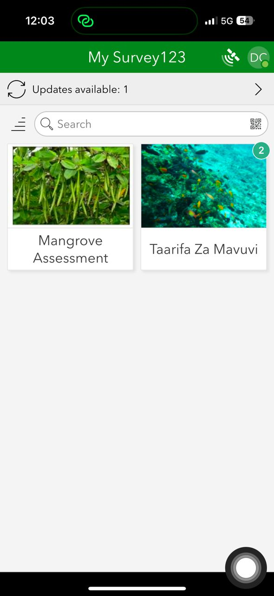
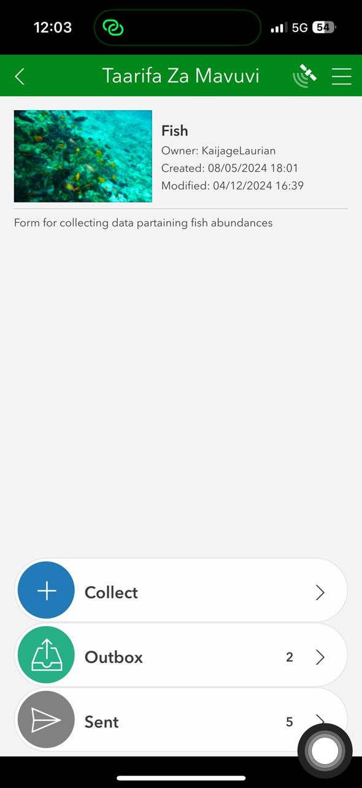

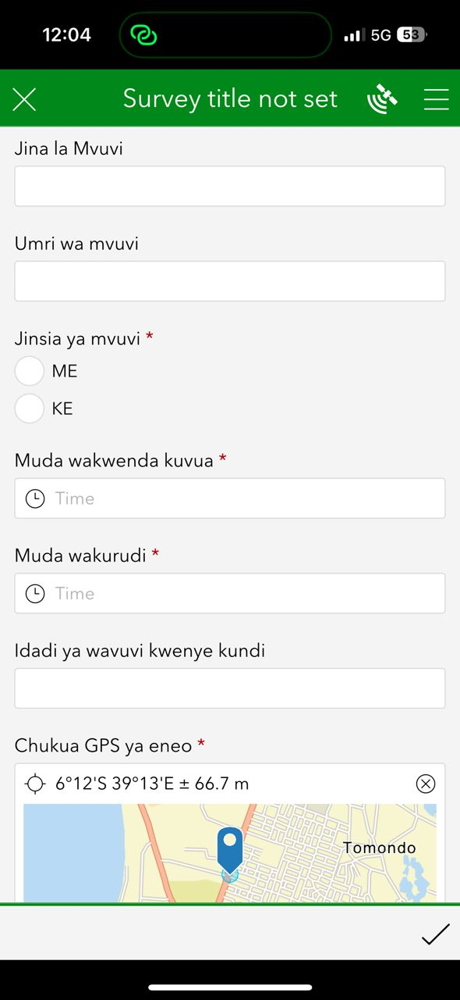

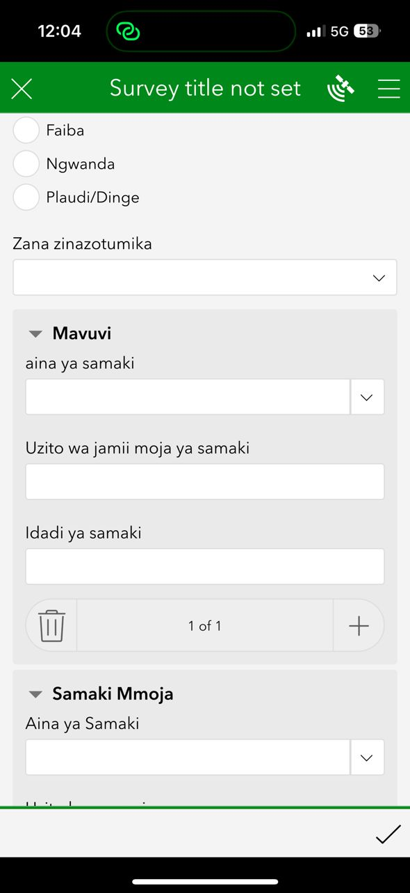
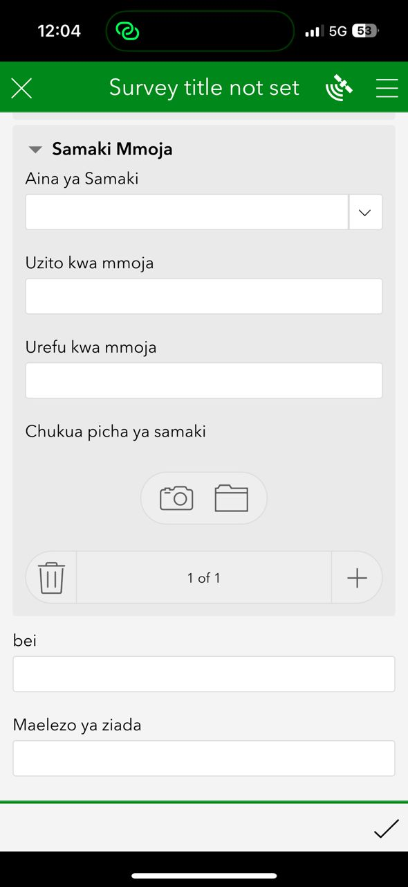